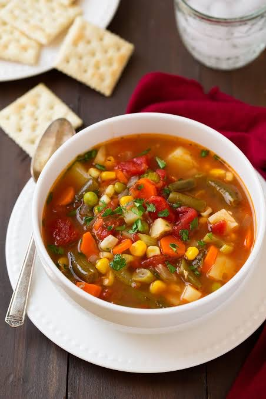

Vegan Soup
Prep Time :
1hr
Yield :
8
Ingredients
2 table spoons of olive oil
2 cups chopped onions or thinly sliced leeks
1 cup celery
2 table spoons Italian seasoning
Coarse salt and ground pepper
Step
Heat oil in a larg stockpot over medium heat. Add onions, celery and italian seasoning with salt and pepper. Cook, stirring frequently, until onions are translucent.
Add Tomatoes and tomato paste and 3 cps of water to the pot. Bring mixtre to boil.
Coo until the vegetables are tender